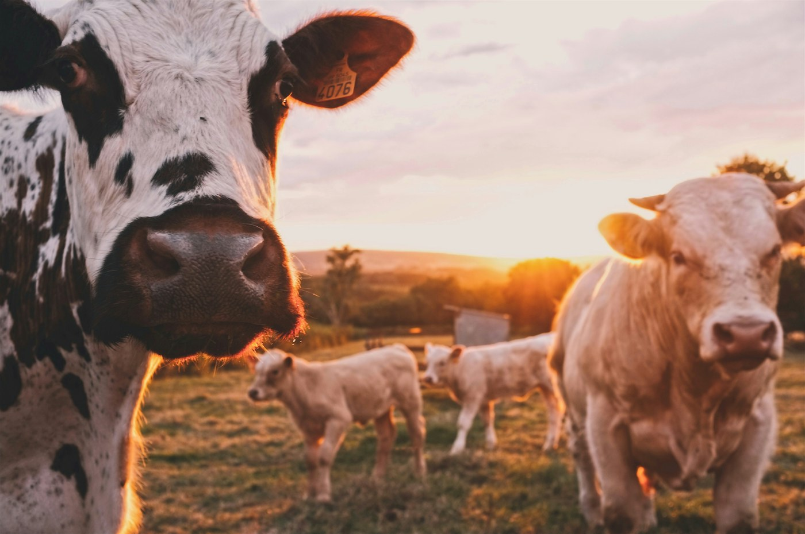

Compléments énergétiques et protéiques pour l'élevage, issus de nos filières agricoles

Les Greniers du Saïss valorise les sous-produits de sa chaîne agricole (tourteaux, mélasses et résidus de transformation) pour proposer une gamme d'aliments de bétail énergétiques et protéiques. Adaptés aux besoins nutritionnels des bovins, ovins, caprins et volailles, nos produits répondent aux exigences des éleveurs et des fabricants d'aliments composés.
Tourteaux
Mélasse
Compléments énergétiques
Minéraux & oligo-éléments
Sacs de 25 kg ou 50 kg, big bags de 500 à 1 000 kg, vrac sur demande, conditionnement adapté aux filières bovine, ovine, caprine et avicole.
Complément énergétique et protéique pour bovins, ovins, caprins et volaille.
Tourteaux, mélasses et résidus de transformation agroalimentaire valorisés en compléments nutritifs.
Livraison internationale, documentation complète, conditionnement aux normes de l'import et de l'export.